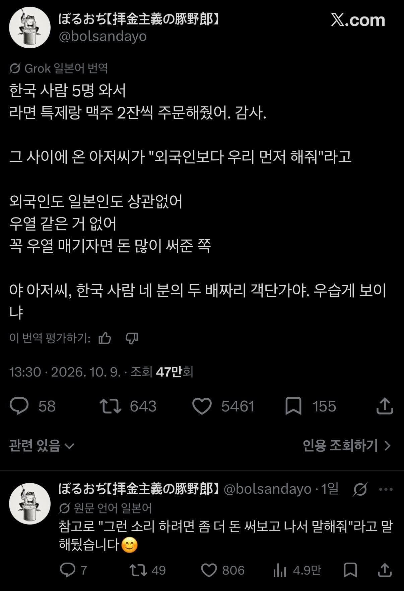

한국인 손님 5명이 온 일본 라멘가게
댓글
나도그랬는데ㅋㅋㅋㅋㅋㅋㅋㅋㅋㅋㅋㅋ
와 나돈데
다라이 이빠이 어짜구
그 사장님 아직도 너 기다림
한국인들 식탐이 엄첨나긴하더라
괜히 비만율이 높아지는게 아님
여행이잖아 바보야
미국비만율 따라잡으려면 한참멀었음
엔저니까 저렇게 시키지 아이슬란드 같은데 가봐라 마트가서 빵에다 잼 발라먹는다 식탐이랑 관계없음
해외 자주 못나가는 일반 소시민이라 한 번 갈때 억지로 많은거 다양하게 먹긴 함
근데 다들 비슷한경험있을듯?
나도 히로시마 마지막날에
오코노미야끼+안주두개+하이볼+맥주 이렇게 시켜서 먹고갔는데 나중에 보니까 남들 한 두배는 시켰더라 ㅋㅋㅋㅋ
사장님이 한국말로 감사합니다 해주심ㅋㅋㅋ
히로시마 갈만함? 브이로그 자꾸 떠서 땡기던데
2박~3박이면 참 좋을 듯?
숙소 가격 괜찮고, 오코노미야끼같은 누구나 맛있어하는 명물있고, 근처에 미야지마라고 엄청 유명한 관광지 있는데 아직 한국인은 많이 없고, 역사 좋아하면 원폭이라는 아주 화끈한 소재도 있고 ㅋㅋㅋㅋ, 도시 규모도 커서 쇼핑도 좋음
나는 좋았어서 부모님 모시고 가게되면 히로시마로 짤 거 같음
적당한 규모의 도시고
히로시마 주변에 볼거리도 많아서..
저번주에 아버지랑 같이 히로시마랑 옆동네 구레(야마토 박물관)까지 다녀왔는데
피해의 역사는 억울하고 가해의 역사는 자랑스럽게 표현한 아주 가증스러운 일본의 모습을 볼 수 있었음
작년에 친구들이랑 일본갔을때... 이자카야에서 푸파하고있는데 다른 테이블엔 시키는게 없드라..
그지들이라;;
다른 테이블 음식까지 뺏어가다니 납븐놈들

가게주인 : 조선에서 온 손님들에게 음식을 서빙해야 되기 때문에 내지인들은 음식 주문 금지입니다
일본여행가면 저녁은 술값포함 최소 만엔잡고 가는데 다 먹고 나가면 문앞까지 나와서 인사해줌
일상 생활에서 한잔 하려는 사람이랑 여행갔으니 먹고 마시려는 사람이랑 스케일이 다르긴 해
일본애들 그 완두콩 같은거
그거랑 맥주나 사와 같은걸로 두시간 버팀
꼬치 하나에 생맥 한잔으로 끝까지 버티더라ㅋㅋㅋ
패키지로 태국 여행갔을 때 가이드가 한국인 8명 테이블 세팅해 주면서 음식을 12인분 시켜주더라. 태국인 8인분 시키면 한국 사람들은 양 적을꺼라고… 근데 실제 음식 나온 거 보니 가이드 말이 맞더라.
내가 이상한건가 일본갔을떄 기분좋아서 음식점에 100만원 쓰고온적있음 다들 한번씩은 이렇게 많이 쓴적있지않음?
돼붕아..
돼붕이는 아니고 4명이서 야키니쿠 갔는데 걍 이것저것 막시키니까 100만원나옴 음식 1/3 은 남기고온듯
이건 좀 많이 아까운데
나도 일본 갔을때 이자까야에서 둘이서 몇만엔치 먹으니까 직원이 길까지 나와서 인사해주더라
둘이서 뭘먹길래 몇만앤씩먹은갸
사람머리만한 밥한공기를 먹고 식후땡으로 참외를 5개나 까먹던 민족..
코이츠 자본주의에 패배한 草草草
일본 함바식당 기사식당 영상 보면 처먹긴 일본애들이 고봉밥으로 엄청나게 먹어대던데 실제론 우리나라 사람들이 더 많이 먹는갑네
관광객이 먹는거랑은 다르지않을까
국밥집가서 기본순대국밥 시켜먹는 현지인이랑
국밥먹는 컨텐츠 즐기러와서 국밥에 수육이랑소주 까지 시켜먹는 관광객이랑은 포지션이 갈릴수밖에
그릉갑다
혹시 맥주 있냐니까 대놓곤 안팔고 캔 맥주로 팔더라
난 술 안마셔서 운전하고 나머지 애들은 다 마심
생맥 네 개째 부터 주시하던데
세명이서 각 7잔 마시고 배고파서 메뉴 부셨는데 종업원 하나가 전담마크 해줬음
나갈 때 또 오라고 폴더인사하고
이게 이자카야갔을때도 종종 극친절 경험 있음.
기본적으로 일본애들보단 많이시키고 술도 많이 마셔서 그런가. 나중엔 메뉴보지도 않고 추천으러 하나 달라고 하면서 추가하니까 계산하고 갈때 문앞에서 폴더인사 나옴 ㅋㅋ
한국인이 평범한 가격대의 식당에선 외식비를 아끼지 않는 경향이 있음
스시집 3명 2만3천엔먹고 부족해서 야키니쿠집가서 2만엔어치 먹고 나왔는데 1따봉 1명함+폴더인사 받음
공항내리자마자 서서먹는스시집 직행해서
2만엔넘게 먹고 시작한 나란돼지..
일본애들 ㅈㄴ 적게먹는거 같긴 하더라
오타루에서 남자 3명이서 꼬치구이 가게 갔는데 사장님이 그만 주문 해달라고 했음...
맥주는 그냥 말하고 직접 머신에서 따르고 마심
한국인들이 기본 더 많이 먹지
근데 요즘 한국 식당가면 일본이 낫다 싶게 진짜 너무 적게주더라
불과 몇년전이랑 너무 다름
혼여가서 야끼니꾸집가서 8만원 써봄ㅋㅋㅋ
엔저는 맞는데 물가가 싼건 아니더라..ㅋㅋㅋㅋ그래도 기본 음 스시 두판에 맥주 한 두어잔씩 먹고 추가로 뭐 접시로 한두접시 더 시키니까 그냥 8,9천엔 그냥 나오던데 관광지라 비싼건가
일본 라멘집 주인이 깜짝 놀랐겠네요 ㅋㅋ 한국인 밥심은 세계적으로 통합니다
나 코로나끝나고 친구랑 우라난바에 쿠시카츠집 가서 고기종류 전부 두개씩달라하니까 너무많을거라하더니 첨엔 무표정이다가 나중엔 부르면 기운좋게 하잇! 하고 달려옴ㅋㅋㅋㅋ
그때 졸라기분좋았음ㅋㅋㅋㅋㅋ
다른손님은 아리가토고자이마시타하고 끝나는데 나 갈때 배웅해주더라
가격은 3만엔 좀 넘게나옴
약간 구석진 곳 꼬치집 가서 먹고 나왔더니 사장님 주방장 나와서 폴더 인사해주고 혼또니 아리가또! 외치시고 인사해주심